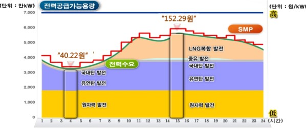

재생에너지 발전소(태양광/풍력)는 수입원은 크게 2가지가 있습니다. 전력판매대금과 공급인증서 판매대금입니다.하나는 전력판매대금입니다. 생산된 전력을 한국전력에게 직접 판매하거나, 전력거래소를 통해서(대형발전소에 해당) 한국전력에 판매할수 있습니다. 전력판매대금은 원/kwh으로 계산이 되며, 기준 가격을 계통한계가격(SMP, System Marginal Price)이라고 부릅니다.
다른 하나는 신재생에너지공급인증서(REC, Renewable Energy Certificate) 매매대금입니다. 재생에너지발전사업자는 재생에너지 생산에 대해 Mwh당 공급인증서를 받습니다. 이 공급인증서는 공급인증서 거래 시장에서 매매를 할수 있습니다. 국내 화력/원자력발전사들은 매년 일정량의 전력을 재생에너지로 생산해야 합니다. 이를 신재생에너지 공급 의무제도(RPS, Renewable Energy Standard)라고 부릅니다. 발전사들이 자체적으로 발전소를 지을수도 있지만, 부족하면 재생에너지 공급인증서를 구입하여서 부족분을 충당할 수 있습니다.
계통한계가격(SMP)
계통한계가격(SMP,Sytem Marginal Price 이하 SMP 가격)은 전력시장에서 거래되는 모든 발전소에 적용되는 기준가격입니다. 한국의 전력시장은 발전부문이 개방되어있어 경쟁을 하고, 판매부문은 한국전력이 독점하고 있습니다. 발전회사는 전력을 판매하고, 한국전력을 구매해야 합니다. 이때 중간에서 가격을 결정하고, 정산을 하는 기관이 한국전력거래소(KRX, Korea Power Exchange) 입니다. 아직도 많은 사람들이 오해를 하지만, 전력거래소와 한국전력은 별도의 기관입니다.
계통한계가격은 한국전력거래소에서 거래되는 전력의 시간대별 기준단가라고 쉽게 정의할 수 있습니다. 전력은 조금이라도 부족하거나, 남으면 곤란합니다. 저장이 어렵기 때문에, 특정시간에 많아도 곤란하고, 부족하면 정전으로 이어집니다. 한국전력거래소는 전력시장을 총괄적으로 운영합니다. 24시간 전에 항상 다음 24시간의 전력수요를 예측해서 각 발전소마다 얼만큼 생산할지 지시를 합니다. 이를 급전(Dispatch)지시라고 합니다. 급전지시는 가장 가격이 싼 기준으로 순차적으로 지시됩니다. 아래의 그림을 보면 새벽 4시에는 수요가 적어서 최고가격이 kwh당 40원인 원자력/석탄 발전소만 가동하면 됩니다. 반면에 15시에는 전력수요가 피크여서 최고가격이 kwh 당 150원인 발전소까지 가동해야 합니다.

계통한계가격은 급전지시때 발전되는 발전기의 가장 비싼가격으로 결정됩니다. 4시에는 60원, 15시에는 160원으로 결정됩니다. 재생에너지 전력판매대금은 계통한계가격을 기준으로 정산 받습니다. 다만, 규모에 따라 정산되는 방식이 조금 다릅니다. 1Mw 이상 대형 발전소는 전력거래소에 회원가입을 해서 생산된 전력에 대해서 시간당 계통한계가격으로 정산 받습니다. 1Mw이하의 소규모 발전소의 경우 전력거래소 회원가입이 불가능한 것은 아니지만, 대부분 한국전력과 직접 전력구매계약(Power Purchase Agreement)를 맺습니다. 이 경우 생산된 전력을 거래소를 거치지 않고, 한국전력으로 직접판매합니다. 이때 기준 가격은 월간 가중평균 계통한계가격으로 계산됩니다. 시간마다 가격이 변동되는 것이 아니라, 생산된 전력의 총액을 월간 가중평균 계통한계가격으로 곱해서 매월 대금을 정산 받습니다. 신문기사나 재생에너지 업계에서 흔히 말하는 SMP가격은 월간 가중평균 SMP가격인 경우가 많습니다. 또한 발전소에서 각종 가격예측이나 타당성 검증시에도 월간 가중평균 SMP 가격이 기준이 됩니다. 페르미 홈페이지의 SMP 가격 그래프도 특별한 설명이 없으면 월간 SMP 가격으로 이해하시면 됩니다.재생에너지 발전소 이외의 다른 발전소의 경우 정산시, 계통한계가격을 통해서 단순하게 정산받지 않고 각 발전기와 생산된 전력의 성질에 따라서 조정이 있습니다. 또한 계통한계가격과 별도로 용량가격(Capacity Price)로 정산되는 발전소도 있습니다. 다만, 여기까지 이야기하면 다소 복잡해지니 생략하겠습니다. 재생에너지 발전소는 계통한계가격을 단일기준으로 요금을 정산 받습니다. 규모가 작은 발전소는 월간 가중평균 SMP가격으로 정산받으며, 오히려 통상적으로 이야기하는 SMP가격은 월간 가중평균 SMP가격일 경우가 더 많다는 점만 기억해두시면 될 것 같습니다.
신재생에너지 공급인증서(REC)
우리가 재생에너지발전소가 필요한 이유는 단순히 전력이 부족해서가 아닙니다. 재생에너지발전소가 원자력/석탄 발전소에 비해서 다소 비싸더라도, 사회에 부가적으로 주는 편익이 있습니다. 원자력에 비해서 훨씬 안전하면서도, 석탄발전소에 비해서 훨씬 저탄소발전이 가능합니다. 이러한 편익을 정책적으로 보상해주기 위해서 국가에서 신재생에너지 공급의무화 제도(RPS, Renewable Portfolio Standard)를 시행하고 있습니다.
석탄/화력/원자력발전소는 매년 일정비율이상의 전력을 재생에너지로 생산해야하고 이 비율은 점점 늘어나고 있습니다.발전사들은 자체적으로 발전소를 지을수도 있지만, 대부분의 경우 재생에너지 사업자에게서 구입을 합니다. 매년 신재생에너지 공급의무화 비율은 에너지 관리공단에서 확인이 가능합니다.
REC는 SMP 와 다르게 Mwh당 거래가 기본입니다. 또한 REC는 생산될때마다 도매시장에서 거래를 할수 있고, 장기계약을 맺어서 거래를 할 수도 있습니다. 도매시장에서 거래할 경우 보다 비싼 가격에 거래할 수 있지만 향후 가격하락에 대한 위험도 감수해야 합니다. 한달에 4회 정도 거래를 할수 있습니다. 전력거래소 주관 REC시장에서 거래가 가능합니다. 언론에 흔히 이야기하는 REC가격은 도매시장에서의 REC가격입니다.
REC장기계약의 경우 에너지 관리공단 주관하에 실시됩니다. 17년 부터는 REC가격과 SMP가격을 통합해서 20년 장기계약이 가능합니다. 장기계약을 할 경우에는 일정부분의 수익하락이 있을 수 있지만, 가격변동성을 피할수 있습니다. 또한 외부 금융기관에서 대출을 할경우 위험회피 차원에서 REC 장기계약이 필수적으로 요구되기도 합니다.